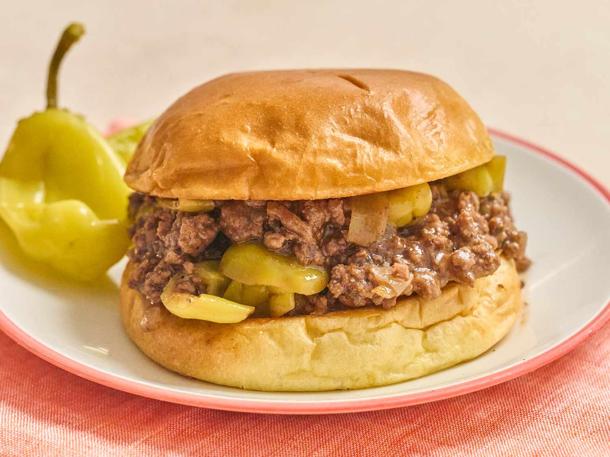

Si la recette ne vous plaît pas, retourner vers nos autres recettes : Accueil
Voici une image de notre beau plat :

Photo magnifique de sloppy joes de Peyton Beckwith.
Ingrédients :
1 pound lean ground beef
¼ cup chopped onion
¼ cup chopped green bell pepper
¾ cup ketchup, or to taste
1 teaspoon yellow mustard, or to taste
½ teaspoon garlic powder
salt and ground black pepper to taste
1/2 teaspoon ground black pepper
2 tablespoons ketchup
6 burger buns
Etapes :
Step 1 : Heat a large skillet over medium heat. Cook and stir lean ground beef in the hot skillet until some of the fat starts to render, 3 to 4 minutes. Add onion and bell pepper; continue to cook until vegetables have softened and beef is cooked through, 3 to 5 more minutes.
Step 2 : Stir in ketchup, brown sugar, mustard, and garlic powder; season with salt and pepper. Reduce heat to low and simmer for 20 to 30 minutes.
Step 3 : Divide meat mixture evenly among hamburger buns.